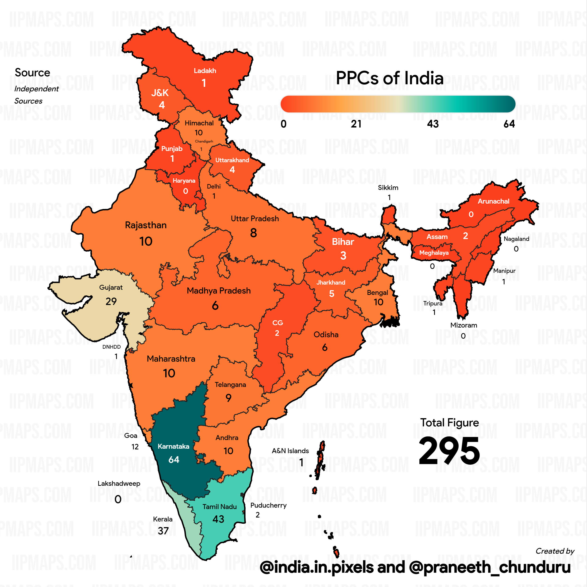

Permanent Pictorial Cancellation (PPC) is a postmark, which shows replica/photo/design or a picture highlighting a tourist, religious, historical or an important place or thing. Thus PPCs give wide publicity mainly to places of historical, cultural, and tourist interest. They are provided at the post offices which are located near such significant places which are of national importance and tourist attraction.
 Click here to open the list